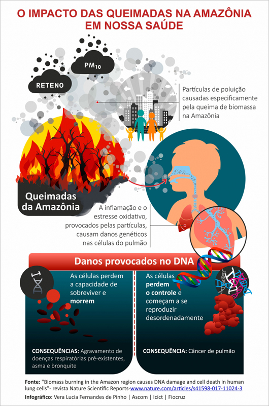

Quais as consequências que elas causam?
As consequências das queimadas, de modo geral, são prejudiciais, tanto ao meio ambiente quanto à saúde humana. Imagine que uma floresta seja completamente tomada por um incêndio. De forma direta, a queimada causará a destruição ambiental de toda a área, perdendo toda a vida selvagem e as riquezas naturais.
De forma indireta, as queimadas também emitem grandes quantidades de gases poluentes e fumaça que fazem mal à saúde quando inalados, causando doenças respiratórias como bronquite, sinusite e rinite. Todos estão expostos a esse problema, pois os ventos levam a fumaça para muitos quilômetros de distância, afetando toda a população do planeta.
Essa emissão de gases e fumaça também afeta o meio ambiente e contribui para o aquecimento global e o efeito estufa. Esses gases aumentam a temperatura do planeta Terra, promovendo diversos efeitos negativos, como desequilíbrio do ciclo da água, com ausência de chuvas em diversas regiões do mundo e aumento do nível dos oceanos, em decorrência do derretimento das calotas polares.
Custo com Saúde: A fumaça e a poluição resultantes das queimadas podem causar problemas respiratórios e outras doenças, aumentando os custos com saúde e reduzindo a produtividade da força de trabalho.
Redução da Produtividade: A saúde comprometida da população e a perda de áreas produtivas afetam a eficiência econômica geral da região afetada.
Prevenção contra queimadas
Algumas prevenções contra queimadas incluem inúmeros meios. Se você vir algum foco de incêndio, ligue para o "193", avise aos bombeiros e evite ficar perto.
- Evitar jogar lixo, entulhos ou bitucas de cigarro em terrenos baldios ou à beira de rodovias.
- Não utilizar fogo para limpar terrenos ou queimar lixo.
- Não soltar balões.
- Seguir a Lei de Crimes Ambientais (Lei nº 9.605/1998) em relação a incêndios.
- Optar por alternativas ao uso do fogo, como roçada manual ou por máquinas, e plantio direto.
- Realizar educação ambiental para conscientizar a população sobre os prejuízos das queimadas.
Entenda mais sobre!
Iremos deixar abaixo links para algumas instituições para que você possa entender mais sobre os casos: